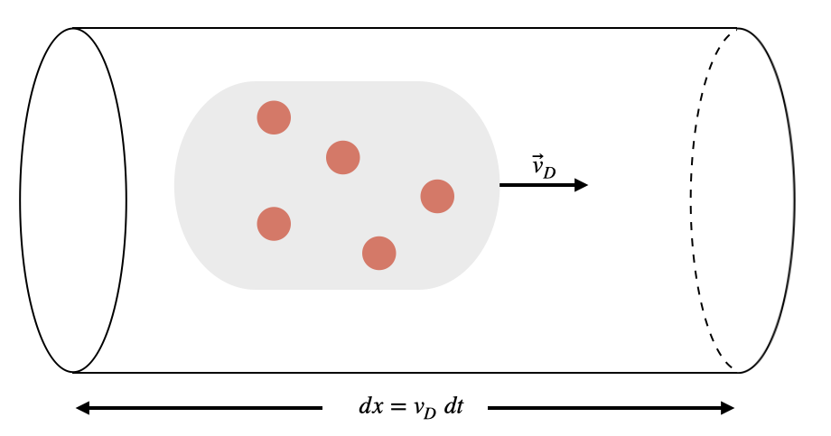

D4.1 Current#
D4.1.1 Motivation: Why Do We Need Current and Current Density?#
In earlier modules, we described electric phenomena using electric fields and electric potential, focusing on situations where charges were stationary. While these ideas explain how energy is stored and how forces arise, they do not describe what happens when charges are allowed to move.
Many real physical systems—wires, electronic devices, plasmas, and even space environments—involve charges that flow continuously. To describe these systems, we need a way to quantify how much charge moves, how fast it moves, and how that motion is distributed in space.
The concept of electric current provides a simple, global description: it tells us how much charge passes through a given cross-section per unit time. This is ideal for analyzing circuits, where geometry is well-defined and currents are uniform.
However, current alone is not sufficient when:
the geometry is complex,
the cross-sectional area varies,
charge flows through extended media rather than wires,
or we want a microscopic description tied to particle motion.
For these situations, we introduce current density. Current density is a local vector quantity that describes charge flow at each point in space. It connects macroscopic circuit behavior to microscopic charge motion and provides the bridge between circuit theory and electromagnetic field theory.
Together:
Current answers how much charge flows through a surface.
Current density answers where, how, and in what direction charge flows.
These concepts are essential not only for understanding electric circuits, but also for later topics such as resistivity, Ohm’s law, electromagnetic fields, plasmas, and energy transport.
D4.1.2 Current#
An isolated neutral conductor has an equal amount of positive and negative charges distributed such that they are in an equilibrium state, that is, no net electric field produced by these charges exists inside the conductor.
Definition of Current
If an external electric field, \(\vec{E}\), is imposed upon the conductor, these charges can move according to this external field. We define the average current as the transport of charges in response to an external electric field, and it is quantified as the amount of charge passing through a cross-section of a conductor per unit time:
The instantaneous current is defined in the limit \(\Delta t \rightarrow 0\):
We characterize a current as positive in the direction of positive charge flow.
NOTE: current is not a vector even though we associate a direction with it. The vector quantity associated with charge flow will be introduced later as the current density.
Units of Electric Current#
Electric current is measured in the ampere (A), one of the seven SI base units.
From the definition of current, the unit of current is defined as:
A current of one ampere means that one coulomb of charge passes through a given cross-section of a conductor every second.
Because charge is carried by discrete particles, this can also be interpreted microscopically: a current of 1 A corresponds to approximately
elementary charges passing a point each second.
It is important to emphasize that current is a rate of flow, not an amount of charge. A large current does not imply a large total charge—only that charge is moving through the conductor rapidly.
Is Electric Current a Vector?#
Although electric current is associated with a direction of flow, it is not a vector quantity.
Current is defined as the rate at which charge crosses a surface,
which is a scalar quantity. It tells us how much charge per unit time passes through a given cross-sectional area, but it does not contain directional components in space.
The apparent direction of current is a sign convention, not a vector direction. By definition, current is taken to be positive in the direction of positive charge flow. This convention allows us to assign a sign to the scalar current, but it does not make current a vector.
To see why current is not a vector, consider a wire bent into a curved or looped shape. The same current flows everywhere in the wire, even though the physical direction of charge motion changes continuously along the path. A true vector quantity would need to change direction at every point, but the current does not—it has a single scalar value throughout the circuit.
The vector quantity associated with charge motion is the current density, denoted by \(\vec{J}\). Current density is defined at each point in space and contains both magnitude and direction. The total current through a surface is obtained from \(\vec{J}\) by a surface integral.
In summary:
Current describes how much charge flows per unit time (scalar).
Direction of current comes from a sign convention.
Current density is the true vector quantity that encodes the local direction of charge motion.
Example — Current from a Time-Varying Charge
The charge that has passed through a cross-section of a wire is modeled by
where \(t\) is measured in seconds and \(Q\) is measured in coulombs.
Answer the following:
Units check
Determine the SI units of the numerical constants \(4.0\), \(-2.0\), and \(1.5\) so that the expression for \(Q(t)\) has units of charge.Instantaneous current
Find the instantaneous current \(I(t)\).Numerical evaluation
Determine the current at \(t = 3.0~\text{s}\).Trend of the current
State whether the current is increasing or decreasing at \(t = 3.0~\text{s}\).
Step 1: Determine the units of the constants
Each term in \(Q(t)\) must have units of coulombs.
The term \(4.0t^2\) implies that the constant \(4.0\) has units of
$\( \text{C/s}^2. \)$The term \(-2.0t\) implies that the constant \(-2.0\) has units of
$\( \text{C/s}. \)$The constant term \(1.5\) must have units of
$\( \text{C}. \)$
Step 2: Identify the relevant relationship
Instantaneous current is defined as
Step 3: Differentiate the charge function
Differentiate term-by-term:
Thus,
Step 4: Evaluate the current at \(t = 3.0~\text{s}\)
Step 5: Determine whether the current is increasing or decreasing
The rate of change of current is
Since \(dI/dt > 0\), the current is increasing at \(t = 3.0~\text{s}\).
Physical interpretation
Checking units ensures the charge function is physically meaningful.
The instantaneous current is the slope of the \(Q\)–\(t\) graph.
A quadratic charge function corresponds to a linearly changing current.
D4.1.3 Drift Velocity#
A standard conductor has a large number of charges and while all positive charges will experience a net acceleration in the direction of the electric field (and the negative charges a net acceleration in the opposite direction), there is a significant retarded force due to “collisions” (in reality it is Coulomb interactions) between the charges. However, there is a net flow of positive charges in the direction of the electric field and it is characteried by the drift velocity (\(\vec{v}_d\)), which is an average velocity attributed to the ensemble of charges. The drift speed can be found by the following reasoning.
Consider a wire segment of length \(dx\), cross-sectional area \(A\), and an ensemble of \(N\) positive charges drifting through the wire.

The distance traveled by the charges can be expressed through the drift speed and elapsed time to cover the wire segment. If one charge carrier has a charge \(q\), then the total charge passing through the wire segment is
We can write the number of charges, \(N\), in terms of charge density
where \(V\) is the volume of the wire segment: \(V = Adx = Av_{D}dt\).
Combining these relationships gives us
or in terms of the current
D4.1.4 Current Density#
For many practical applications, it is more useful to work with densities rather than total quantities. For example, to determine the mass of water in a swimming pool, we multiply the volume of the pool by the mass density of water. The density tells us how much mass exists per unit volume at each point in space.
In an analogous way, we introduce the concept of current density, which describes how electric current is distributed locally within a conductor. Rather than focusing on how much charge flows through an entire cross-section, current density tells us how charge motion is distributed at each point and in which direction it occurs.
Definition of Current Density
The current density is a vector quantity that describes the flow of electric charge per unit area at a given point in space.
Its magnitude is defined as
and, at the microscopic level, as
where
\(n\) is the number density of charge carriers,
\(q\) is the charge of each carrier,
\(v_D\) is the drift speed.
Because drift velocity has both magnitude and direction, the vector form of the current density is
The direction of \(\vec{J}\) is defined to be the direction of positive charge flow.
Relationship Between Current Density and Current#
Current density is defined at a point, which allows it to be treated as a vector field. Electric current, by contrast, is defined as a flow rate across a surface and is therefore a scalar quantity.
The connection between the two is given by
where \(d\vec{A} = \hat{n}\, dA\) is the oriented surface area element. The dot product projects the current density onto the surface normal before summing contributions across the surface.
For the special case of a uniform current density perpendicular to a flat cross-section, this reduces to
In more complex systems—such as plasmas in stars, the ionosphere, or laboratory plasma devices—there may be no well-defined wire or cross-section. In such cases, the surface through which current is evaluated can be chosen arbitrarily, and the full surface integral must be used to compute the current.
Current density is a local vector quantity defined at a point in space.
Electric current is a global scalar quantity obtained by integrating the current density over a surface.
The vector nature of charge flow is contained in \(\vec{J}\), not in \(I\).
Drift Velocity vs. Signal (Field) Propagation Speed#
When a circuit is completed, a light bulb turns on almost immediately. This does not mean that electrons travel from the light switch to the bulb at anything close to the speed of light.
The drift velocity \(v_D\) is the average speed at which charge carriers move through a conductor in response to an electric field. In typical metal wires, the drift velocity of electrons is very slow, often on the order of millimeters per second or less.
Despite this slow motion of individual charges, electrical signals and energy propagate through a circuit at a speed that is a significant fraction of the speed of light. This rapid propagation is associated with the establishment of the electromagnetic field throughout the circuit, not with the physical transport of individual electrons from one end to the other.
A helpful analogy is a large stadium filled with 100,000 people. Each person moves slowly as they walk around the stadium, and it may take a long time for any single individual to reach the opposite side. However, a coordinated wave—such as the “stadium wave”—can propagate around the entire stadium in a matter of seconds. The wave moves quickly even though the people themselves move very little.
Similarly:
Electrons drift slowly through a wire.
Electric fields and energy propagate rapidly through the circuit.
The light turns on because the electromagnetic influence reaches the bulb quickly, not because electrons race from the battery to the bulb.
This distinction is essential for understanding how circuits operate and prevents the common misconception that current involves electrons traveling long distances at high speed.
Example — Current and Current Density in a Wire
A steady current of \(I = 2.0~\text{A}\) flows through a straight copper wire with a circular cross-section of radius \(r = 1.0~\text{mm}\). The number density of free electrons in copper is approximately \(n = 8.5 \times 10^{28}~\text{m}^{-3}\).
Answer the following:
What is the current density in the wire?
What is the drift speed of the electrons?
Step 1: Identify the relevant relationships
The current density is related to current and cross-sectional area by
At the microscopic level, current density is related to drift velocity by
Step 2: Compute the cross-sectional area
The area of the wire is
Step 3: Compute the current density
Substitute into the definition:
Step 4: Solve for the drift speed
Rearrange \(J = nqv_D\) to obtain
Using \(q = 1.60 \times 10^{-19}~\text{C}\),
Physical interpretation
A current of several amperes corresponds to a very large current density because the wire’s cross-sectional area is small.
Despite this, the drift speed of individual electrons is extremely slow—only a few hundredths of a millimeter per second.
The light bulb turns on quickly not because electrons move rapidly, but because the electromagnetic field propagates through the circuit at nearly the speed of light.
This example illustrates the difference between macroscopic current, local current density, and microscopic charge motion.